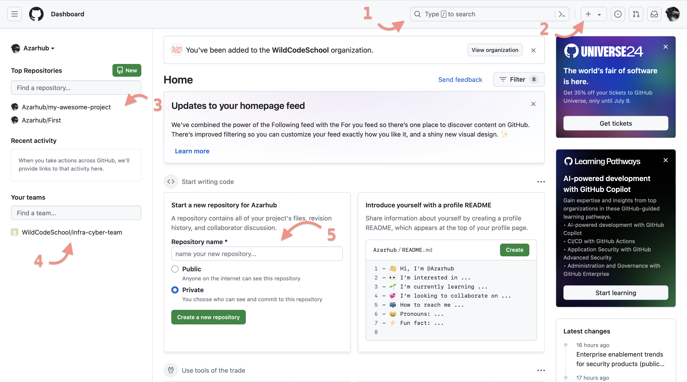
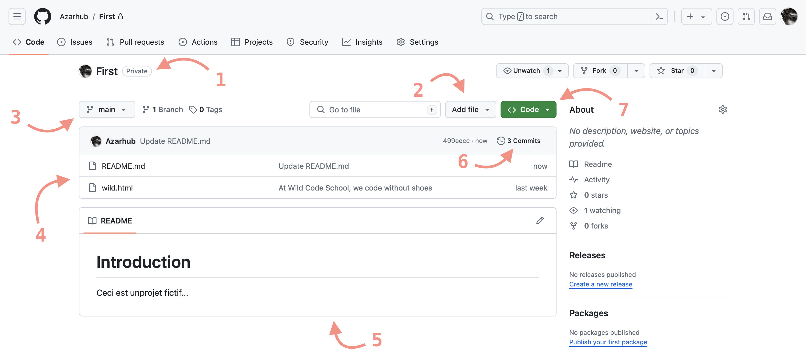

Utiliser GitHub
Introduction
Dans cette quête, tu vas plonger dans l'univers de GitHub, une plateforme de gestion et de publication de projets facilitant le travail en équipe.
Pendant la formation, tu auras l'occasion d'en apprendre plus sur GitHub et sur Git, l'outil de gestion de version décentralisé sur lequel Github s'appuie.
L'objectif principal ici, c'est de te montrer comment partager tes travaux de manière simple et efficace. Fini les e-mails encombrants ou les fichiers perdus, avec GitHub, tu vas juste envoyer le lien de ton dépôt (repository en anglais) où tu as tout déposé. C'est pas cool ça ?
🤓 Objectifs :
✅ Créer un compte sur github.com ✅ Comprendre le concept de dépôt ✅ Créer un nouveau dépôt ✅ Utiliser les fonctionnalités de base de GitHub
Sommaire
👉 Création d'un compte et Dashboard
🔏 Créer un compte
En créant un compte sur GitHub, tu peux :
- Stocker tes projets.
- Travailler en collaboration avec d'autres personnes.
- Suivre les versions de tes projets.
- Contribuer à des projets open-source.
🔬 C'est parti !
Crée ton compte sur github.com en suivant ces étapes :
- Rends-toi sur https://github.com
- Clique sur le bouton "Sign up" (S'inscrire) en haut à droite de la page.
- Remplis les champs avec ton nom d'utilisateur, ton adresse e-mail et ton mot de passe.
✨ Soigne ton image : GitHub, c'est une de tes cartes de visite dans le monde numérique. Même si ton adresse mail n'est pas visible, d'autres infos le sont ! Fais bonne impression avec une adresse pro et des infos bien renseignées. 🚀
- Clique sur "Create an account" (Créer un compte).
Félicitations ! Tu viens de créer ton compte sur GitHub.
🔎 Vue d'ensemble du Dashboard :
Maintenant que tu as créé ton compte GitHub, examinons le Dashboard :

- La barre de recherche est un champ où tu peux saisir des mots-clés pour rechercher des dépôts, des utilisateurs, des organisations ou du contenu sur GitHub.
- En cliquant sur ce bouton +, tu peux créer ou importer un dépôt depuis une URL.
- Cette liste affiche tous les dépôts auxquels tu as accès. Elle te permet de naviguer facilement entre tes projets.
- Cette section affiche les équipes auxquelles tu appartiens.
- Cette partie te permet de démarrer rapidement un nouveau projet en fournissant les informations nécessaires sans avoir à passer par les options avancées de création de dépôt.
🔬 Exercice
- Sur la page d'accueil de GitHub, prends un moment pour explorer ton tableau de bord.
- Observe la barre de menu latérale gauche que tu peux déplier en appuyant sur le bouton ☰ . Quels éléments y trouves-tu ?
Voir la solution
Home : l'icône de la maison te ramène à la page d'accueil de GitHub.
Issues : te permet d'accéder directement à la section des problèmes (ou "Issues").
Pull Requests : gère et consulte les pull requests que tu as créées ou auxquelles tu participes.
Projects : te permet d'accéder à la fonctionnalité de gestion de projet de GitHub.
Discussions : forum de communication collaboratif pour la communauté autour d’un projet open source ou interne.
Codespace : un environnement de développement hébergé dans le cloud.
Explore: explore de nouveaux projets, tendances et développeurs sur GitHub.
Marketplace : te permet d'accéder à la place de marché de GitHub, où tu peux trouver et installer des applications tierces pour enrichir et personnaliser ton expérience GitHub.
👉 Création d'un dépôt
Un dépôt (repo pour les intimes) est un endroit où tu stockes tes projets, tu gardes une trace de leur historique et tu peux collaborer avec d'autres personnes. Créer et configurer un dépôt sur GitHub sera ta prochaine tâche !
Rappel : Ceci est une quête d'initiation à GitHub et aux dépôts. Pas besoin de tout comprendre de suite ! De nombreuses occasions d'approfondir GitHub t'attendent durant ta formation.
🗄️ Les éléments essentiels d'un dépôt
Commençons par quelques concepts sur lesquels GitHub est construit. Voici les éléments essentiels à connaître :
-
Commits : Un commit est, en quelque sorte, une sauvegarde des modifications apportées à ton projet à un moment donné. Chaque fois que tu effectues des changements sur tes fichiers, tu dois enregistrer ces changements dans un commit pour les ajouter à l'historique de ton projet.
-
README.md : La première chose que les gens voient lorsqu'ils visitent ton dépôt. C'est là que tu peux expliquer en quoi consiste ton projet, comment l'utiliser, comment le configurer, etc. Un bon README.md peut aider les autres développeurs à comprendre rapidement ton projet. Il est traditionnellement écrit en Markdown, d'où le
.md. -
LICENSE : Le fichier LICENSE indique aux autres utilisateurs comment ils peuvent utiliser ton code. Il existe différents types de licences, chacune avec ses propres conditions d'utilisation.
-
Branches : Les branches sont des versions alternatives de ton projet. Elles te permettent de travailler sur des fonctionnalités ou des corrections de bugs sans affecter le code principal (branche principale ou "main").
-
Issues : Les issues sont des discussions sur ton projet. Elles peuvent être utilisées pour signaler des bugs, demander des fonctionnalités ou discuter de tout ce qui concerne le projet.
-
Pull Requests : Les pull requests sont des propositions de modification de ton code. Elles sont généralement utilisées pour fusionner des modifications d'une branche vers une autre (par exemple, de la branche de fonctionnalité vers la branche principale).
Le lien vers la base de connaissance GitHub
🔎 Vue d'ensemble d'un dépôt :

- Nom du dépôt : En haut de la page, tu trouveras le nom de ton dépôt, suivi d'une indication public ou privé selon les possibilité d'accès par défaut du dépôt.
- Add file : Ce bouton te permet d'ajouter de nouveaux fichiers à ton dépôt. En cliquant dessus, tu peux choisir d'ajouter un nouveau fichier ou de créer un nouveau fichier.
- Les branches : Ce bouton te montre la liste des branches de ton dépôt. Tu peux passer d'une branche à l'autre en cliquant dessus.
- Liste des fichiers : Dans cette section, tu verras la liste de tous les fichiers et répertoires présents dans ton dépôt. Tu peux cliquer sur chaque fichier pour voir son contenu.
- Aperçu du README.md : Si ton dépôt contient un fichier README.md, son contenu s'affichera ici.
- Historique : Ce bouton te permet de voir l'historique des commits de ton dépôt. En cliquant dessus, tu peux voir tous les commits précédents, avec leurs messages associés.
- <> Code : Ce bouton te permet de récupérer l'adresse du dépôt. En cliquant dessus, tu verras les options (URL HTTPS ou SSH) pour cloner ton repository avec Git ou pour le partager avec d'autres personnes. Il t'offre aussi la possibilité de le télécharger directement en ZIP.
Si des termes comme SSH, HTTPS ou URL te semblent confus pour l'instant, c'est tout à fait normal ! Nous les expliquerons plus en détail par la suite. Pour l'instant, concentre-toi sur la découverte de GitHub 🌟
🔬 Exercice
Maintenant, à toi de créer un dépôt pour un projet fictif, par exemple en suivant les étapes ci-dessous :
- Connect toi sur ton compte GitHub.
- Crée un nouveau dépôt.
- Donne un nom et descriptif pour ton projet fictif.
- Assure-toi que le dépôt est public, ainsi tout le monde pourra le voir.
- Ajoute un fichier README à ton projet avec une description de ton projet fictif.
Félicitations ! Dans la suite de la formation, lors de certains exercices, comme les checkpoints ou certaines quêtes, il te sera demander de publier ta solution en créant un dépôt github contenant tous les fichiers (code ou autre) et en fournissant l'URL (i.e. : lien) du dépôt.
☝️ Résumé
Dans cette quête, tu as découvert les bases de GitHub et des dépôts (repositories). GitHub est une plateforme en ligne pour héberger et collaborer sur des projets de développement. Un dépôt, c'est un espace où tu stockes ton projet avec son historique et où tu peux collaborer avec d'autres personnes.
Un dépôt contient un fichier particulier et important : README.md pour décrire le projet.
📝 Quiz
faux||faux|||vrai
# Qu'est-ce que GitHub ?
[x] Une plateforme pour héberger des projets.
[] Un éditeur de texte.
# Quel est l'élément essentiel pour décrire un projet sur GitHub ?
[x] README.md
[] LICENSE
# Qu'est-ce qu'un commit ?
[x] Une modification enregistrée dans l'historique.
[] Un commentaire sur une issue
💪 Challenge
- Crée ton dépôt public.
- Rédige un
README.mdavec un Descriptif et sauvegarde-le. - Utilise le bouton Add file pour créer un fichier nommé
solution.txt. Assure-toi qu'il contient au moins la phrase suivante : Prêt·e pour ma formation à la Wild Code School . Et quand tu sauvegardes le fichier, n'oublie pas d'ajouter un commentaire explicite dans le commit ! - Ajoute une image aux fichiers du projet avec le bouton Add file.
🧐 Critères d'acceptation
- Ce dépôt doit contenir trois fichiers
README.md,solution.txt. et une image. - Ce dépôt doit avoir au minimum 1
commitdans son historique.
Ressources partagées sur cette quête
- Mon premier readme sur githubhttps://github.com/juliabelhassen/wildcodeschoolprojects/blob/main/README.md
- 1ère quête !https://github.com/Saddemga/Saddemga
- Première quête !https://github.com/Pdev33/test.git
- Première quêtehttps://github.com/Jordan-182/Wild
- 1ere quête https://github.com/Joey-dev85/Exo1
- Première quêtehttps://github.com/Alexhian/Test
- nouvelle quêtehttps://github.com/franksena/firstwild
- Mon premier projet github wild code schoolhttps://github.com/Sylviatoo/1sttry.git
- Premier projet Wild Code School !https://github.com/itisalicia/premierProjetWildCodeSchool.git
- Première quête réalisée ! https://github.com/hakkenheiner/go-to-the-wild-code-school
- Premier pas sur Githubhttps://github.com/Aghiles-Belkalem/README.md.git
- Premier repo avec la Wild Code Schoolhttps://github.com/EmiLy-Ly-san/FictionalProjectWilders.git
- Mon dépôt Github avec Solution et Readme avec image!https://github.com/CharlesMwilder/WildSchoolDepot1/blob/main/README.md
- Permet d'apprendre à utiliser les branches, toussa toussahttps://learngitbranching.js.org/?locale=fr_FR
- Mon premier dossier sur githubhttps://github.com/Edwige-Roussin/Mon-premier_projet
- Premier projet :)https://github.com/CharlesCatto/Myfirstone.git
- Premiers pas, ça ne ressemble à rien x)https://github.com/Lesageemeric/Nouveau_d-p-t_perso.git
- Le 1er d'une longue sériehttps://github.com/Icebergb1/First-Try/tree/main
- Quête numéro 1.https://github.com/Fakez92/Quete1.git
- Première quêtehttps://github.com/Prehistory-Banane/Factory
- Quête 1 githubhttps://github.com/cedricrighi/quete1.git
- Ma première quête sur GitHubhttps://github.com/CamilleCalvel/Test-Github.git
- Aller hop, c'est parti pour un premier repo sur Git !https://github.com/Philyon/Demarrage-formation-TSSR
- première fois sur GitHub https://github.com/Baudwild/Challenge-GitHub-
- Quête Githubhttps://github.com/Antoine227/Projet_perso_1
- ça c'est un lien incroyablehttps://github.com/JeremyPerezGit/NoNameAllowed
- Première quête !https://github.com/Ochoooooo/Test-Projet
- Challenge en cours!!https://github.com/Faricoder/solution.txt
- Première quête https://github.com/Balt21/Wild-Code-School
- 1ère quête ! https://github.com/RomainVarra/Test
- mon premier dépôt githubhttps://github.com/gregorydatis/Github.git